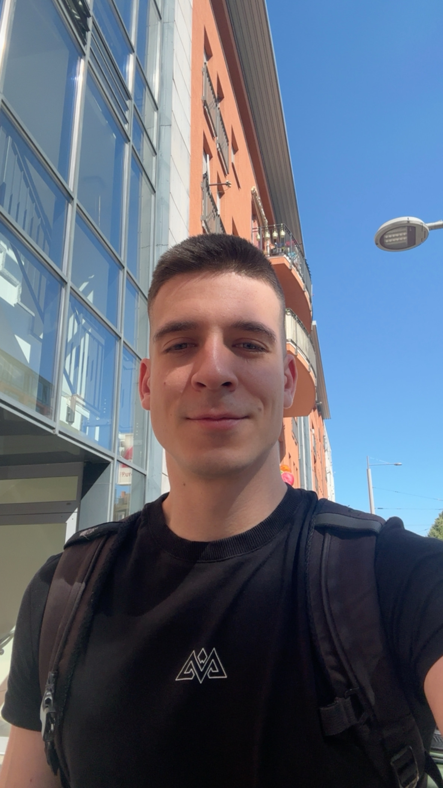
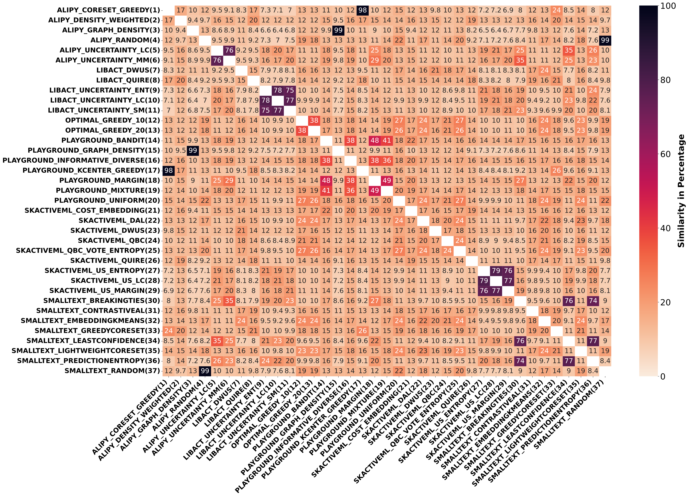

I am an M.Sc. student in Computer Science at TU Dresden, working with Roberto Calandra in the Learning, Adaptive Systems and Robotics (LASR) Lab. I also did my B.Sc. in computer science and mathematics at TU Dresden, where I focused on AI for robotic manipulation supervised by Roberto Calandra.
My current research focuses on understanding how intelligent systems can learn meaningful latent representations from interaction with the world. Thereby I focus on analyzing how the learned representations support planning, decision making and generalization. In the long term I want to understand how hierarchical abstraction can emerge across different temporal and semantic scales by learning from multimodal sensory streams in a self-supervised manner. I believe that achieving this goal requires a deeper understanding of how current models work, what they represent internally, and which properties of learned representations make them genuinely useful, particularly for hierarchical reasoning. Thus I recently became more interested in mechanistic interpretability of deep neural networks.
During my studies I worked on a bunch of topics closely related to artificial intelligence or robotics (or both). For an overview of my activities have a look at my CV and the research project section.
I am always keen to talk about science and important questions of our time. If you want to collaborate with me or just want to have a chat about topics in my area of research, feel free to reach out via one of the channels below.

A big shoutout to Johannes von Oswald and Nino Scherrer for the website design, which I adapted from them.